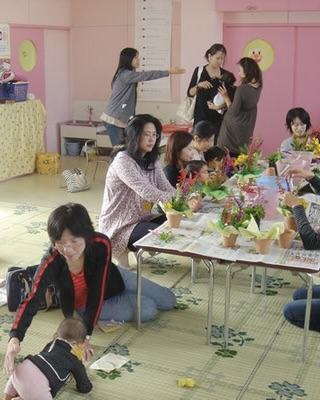
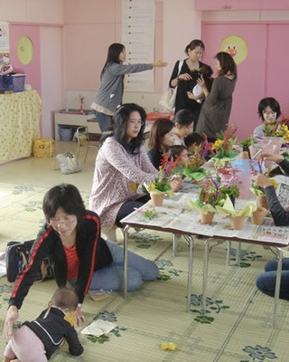
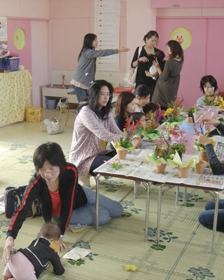
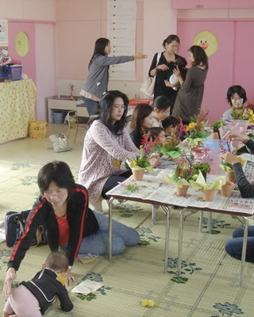

こどもの、こどもによる、こどものための園
2025.07.15
夏祭りを開催します！
2025.06.30
ウェブサイトをリニューアルしました。
こどものそのは、「こどもだけでなく、親も育つ」がモットーです。 幼児園・親・教員の三者が対等なパートナーシップを築き、こどもを中心にすえ、共に育ちあう場、それが「こどものその」です。
0〜3歳までの未就園児の親子を対象に、保育士や助産師とお話しながら楽しむことができます。
通称「親ふれ」は、0歳から3歳までの未就園児親子を対象としたプログラムです。開催日は火・水・木曜日で、保育士や助産師といった専門家が常駐しており、安心して子育ての相談ができます。
「親ふれ」で園と関わり始め、慣れてきたら「一時保育」を利用し、最終的には本格的な入園へと繋がる、そんなステップもご用意しています。
〒933-0916 富山県高岡市大町11-19
TEL. 0766-25-2231
子育て中の息抜きに。お茶を飲みながら気軽に話せる場です。（内容は後で追加）

 


